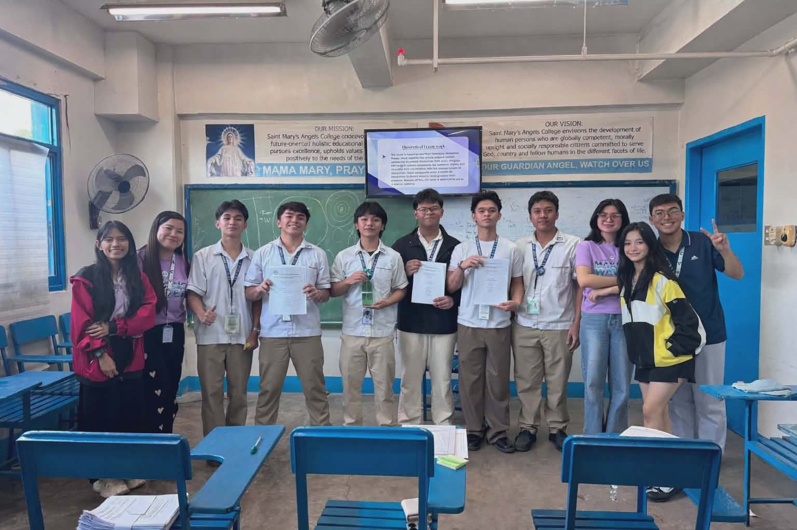

Project Proposal - "IoT Management: A Framework for Responsible Artificial Intelligence Water Consumption"
A project proposal, proposed on October 10, 2026, that provides a framework to reduce AI water consumption.
Project Concept Paper - Group 5Computer Engineering student · Mapúa University
Hi, welcome to my Portfolio.
My Passion, My Choice, My Future.
I'm Dave Aron D. Cabaron, currently a college freshman studying in Mapua University. In my personal time, I like listening to music, going to the gym, taking long walks, and playing rhythm games (osu!). My most notable achievements, personally, are building and troubleshooting computer systems and mechanical keyboards.
In the past 3 months I have been a freshman here in Mapua University, so far my experience was fun yet tiring and difficult. With the amount of tasks and quizzes, all of it did not come easy. Its also been difficult adapting to a new environment, but eventually I was able to pick myself up and slowly adjust to my environment.
Honestly, I underestimated Mapua University's implementation of the "quarterm" system, it really took a toll on me. I was always finding myself in situations where I could not have time for myself. There were always instances where I was torn in between doing schoolwork and doing the things I like. If I were to be asked what the most difficult experience for me was, my answer would be adapting to the school, its environment and its system. Although I am now better at handling myself in college, I still face struggles from time to time but I hope to be able to overcome these struggles eventually.
Overall, I still enjoy this program and I don't regret my decision going into this program. I am someone who is really passionate with tech, specifically computer hardware and modern tech. The university has also helped in shaping me to become someone who is better with managing his time and priorities, and the courses have taught me a lot in various aspects. I look forward to my journey in this institution and excited to see what's to come in the future.
| Code | Course |
|---|---|
| CPE101-4 | Computer Engineering as a Discipline |

A capstone project from Senior High. This capstone was approved on April 13, 2026 and it provides an organic, eco-friendly solution for mosquito repellents.
CAPSTONE CHAPTER 1-5A project proposal, proposed on October 10, 2026, that provides a framework to reduce AI water consumption.
Project Concept Paper - Group 5Get in touch with me for communication purposes.